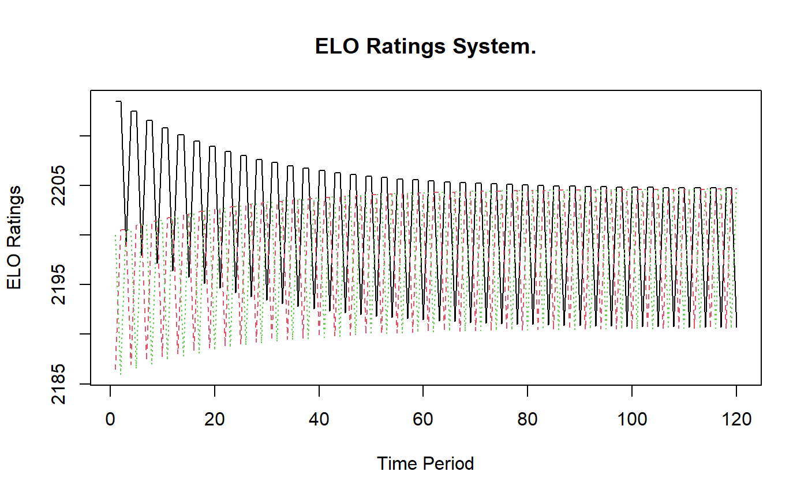
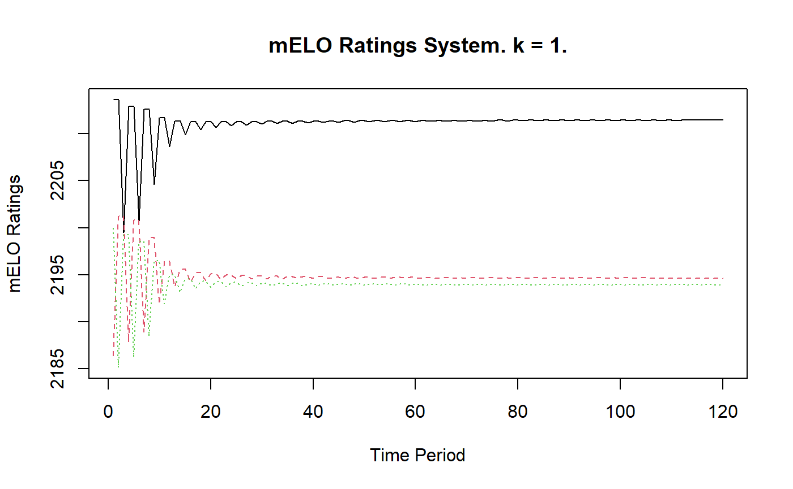
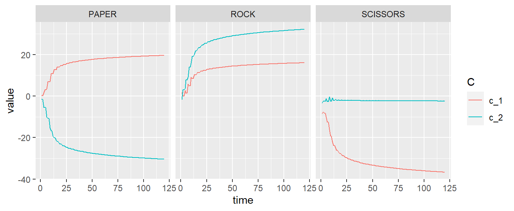
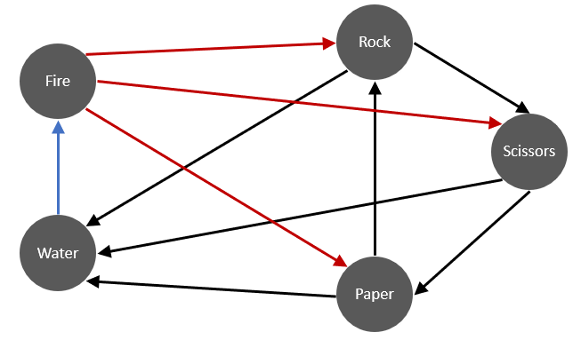
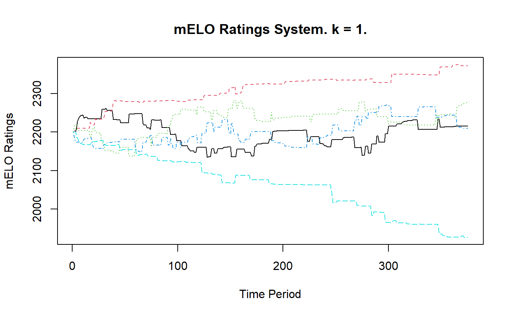
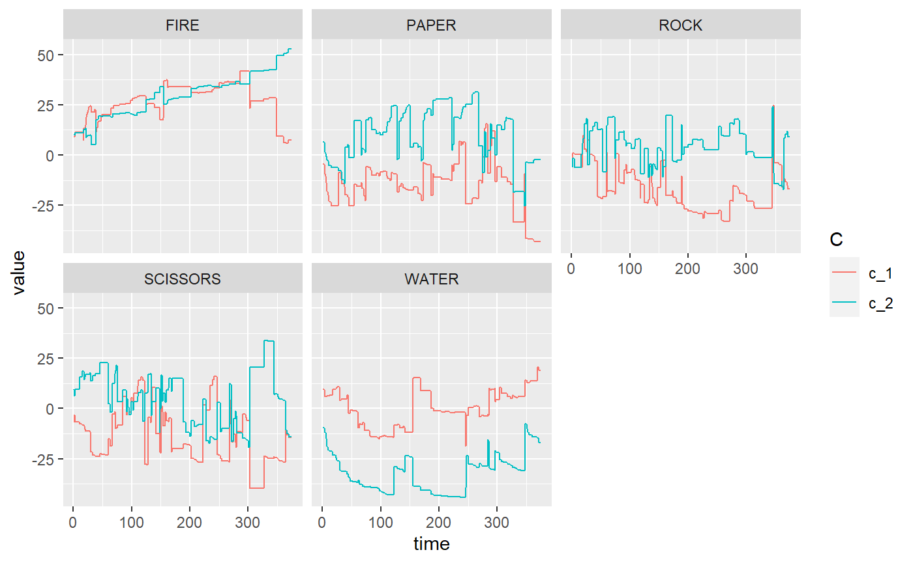
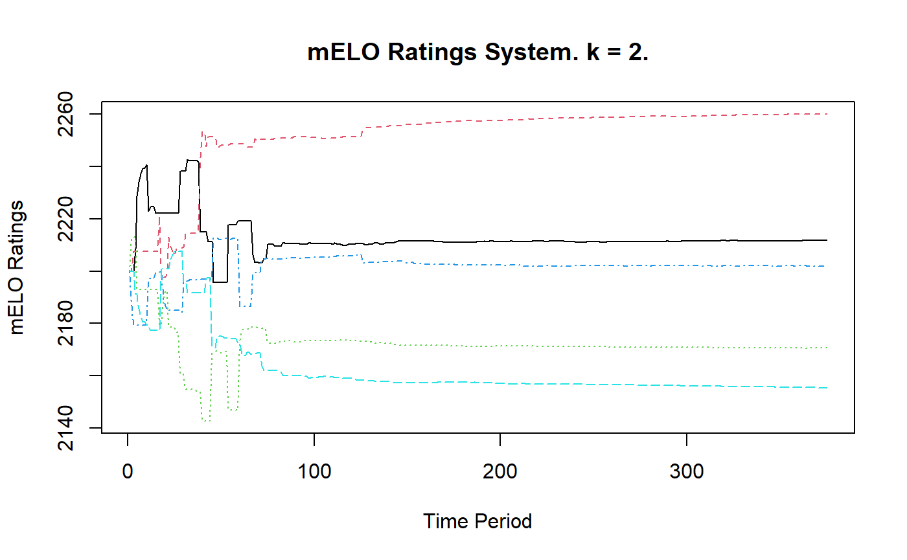
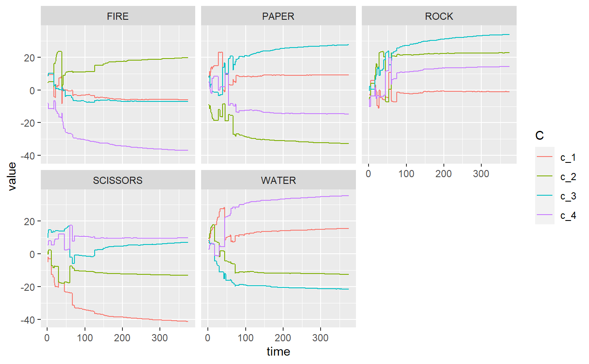

Introduction to mELO ratings
David Lazaridis
2020-03-24
Source:vignettes/01_introduction.Rmd
01_introduction.RmdIntroduction
mELO is an R implementation of DeepMind’s multidimensional Elo rating (mELO) system for evaluating agents. This package uses code directly from Alec Stephenson and Jeff Sonas excellent PlayerRatings package (v1.0-3, 2019-02-22).
Balduzzi, et al. (2018) propose that a rating/evaluation method should have the following properties:
- P1. Invariant: adding redundant copies of an agent or task to the data should make no difference.
- P2. Continuous: the evaluation method should be robust to small changes in the data.
- P3. Interpretable: hard to formalize, but the procedure should agree with intuition in basic cases.
Typical methods for performing pairwise comparisons such as Elo or Glicko violate P1 and can result in poor evaluations of agents and poor predictions of outcomes.
Additionally, typical methods can perform poorly in an environment where there exist cyclical or non-transitive interactions between agents or players. Below we demonstrate the utility of the mELO package with some simple examples.
Evaluating agents with non-transitive interactions
We provide some examples of how the mELO package can be used to evaluate agents and predict outcomes in the presence of non-transitive interactions. The examples are trivial but do demonstrate the weaknesses of existing methods and the utility of the mELO approach.
Rock-Paper-Scissors
Out first model will evaluate throws in the 2-player game of Rock-Paper-Scissors. The direction of the arrows in the figure below give the winner of each thrown pair

| time_index | throw_1 | throw_2 | outcome |
|---|---|---|---|
| 1 | PAPER | ROCK | 1 |
| 2 | ROCK | SCISSORS | 1 |
| 3 | SCISSORS | PAPER | 1 |
| 4 | ROCK | PAPER | 0 |
| 5 | SCISSORS | ROCK | 0 |
| 6 | PAPER | SCISSORS | 0 |
The second and third columns give the throws chosen. A 1 in the outcome field denotes a win for throw 1, 0 denotes a win for throw 2. The rps_df data has 120 matches.
ELO model
The predictions probabilities estimated by an Elo model are given by \[ \hat{p}_{ij} = \sigma (\alpha(r_i + \gamma_i - r_j)) \] Where \(\hat{p}_{ij}\) is the estimated probability of player \(i\) beating player \(j\), \(r_i\) is the current rating of player \(i\), \(\alpha = \ln(10)/400\), \(\gamma_i\) represents the first move or home ground advantage for player \(i\) and \[ \sigma(x) = \frac{1}{(1+ e^{-x})}. \]
After a match, the following rule is used to update ratings \[ r_i^* = r_i + \eta \delta_{ij} \] where \(\eta\) is the learning rate and \(\delta = \hat{p}_{ij} - y\) where \(y \in \{0, 1\}\) is the outcome of the match for player \(i\).
The following code fits a standard Elo model using the ELO() function with a default eta (the learning rate) and p1_advantage (Player 1 advantage i.e; first mover or home ground advantage).
# Fit model
rps_ELO <- ELO(rps_df)
# Display output
rps_ELO
#>
#> ELO Ratings For 3 Players Playing 120 Games
#>
#> Player Rating Games Win Draw Loss Lag
#> 1 SCISSORS 2204.6 80 40 0 40 0
#> 2 ROCK 2204.6 80 40 0 40 1
#> 3 PAPER 2190.7 80 40 0 40 0Now we can generate some predictions on a sample of the data and compare them to the actual outcomes
rps_ELO_preds <- predict(
rps_ELO,
head(rps_df)
)
results_df <- data.frame(
head(rps_df),
ELO_preds = rps_ELO_preds %>% round(3)
)
results_df %>% knitr::kable()| time_index | throw_1 | throw_2 | outcome | ELO_preds |
|---|---|---|---|---|
| 1 | PAPER | ROCK | 1 | 0.48 |
| 2 | ROCK | SCISSORS | 1 | 0.50 |
| 3 | SCISSORS | PAPER | 1 | 0.52 |
| 4 | ROCK | PAPER | 0 | 0.52 |
| 5 | SCISSORS | ROCK | 0 | 0.50 |
| 6 | PAPER | SCISSORS | 0 | 0.48 |
We observe that the Elo predictions are very poor. We can plot the history of the ratings using the plot() function

We note that the ratings bounce up and down as the throws consistently lose and win to the same players.
Because the ability of an agent is described by a single parameter, the Elo ratings bake-in the assumption that relative abilities are transitive. This assumption is clearly inappropriate in this setting (and likely many others). The Elo model completely fails to capture the dynamics of this simple game and cannot be used to adequately rate or evaluate throws or predict outcomes.
mELO model
The predictions probabilities estimated by an mELO model are given by \[ \hat{p}_{ij} = \sigma (\alpha(r_i + \gamma_i - r_j + \textbf{c}_i \Omega \textbf{c}_j' )) \] where \(\Omega\) is a \(2k \times 2k\) matrix constructed such that \[ \Omega = \sum_{i=1}^{k} (e_{2i-1} e_{2i}' - e_{2i} e_{2i-1}') \] and \(\textbf{c}_i\) is a row vector of the \(m \times 2k\) dimension matrix which encodes the non-transitive interactions between the \(m\) agents or players. Larger \(k\) allows for better estimates in situations with more complex dynamics, which we will observe later.
After a match, the following rules are used to update ratings \[ r_i^* = r_i + \eta_1 \delta_{ij}, \] \[ \textbf{c}_i^* = \textbf{c}_i + \eta_2 \delta_{ij} \Omega \textbf{c}_j \] where \(\eta_1\) and \(\eta_2\) are the learning rates for the ratings vector \(\textbf{r}\) and \(\textbf{C}\) matrix respectively.
The following code fits a mELO model using the mELO() function with a default \(k=1\), learning rates and player 1 advantage parameters.
# Fit model
rps_mELO <- mELO(rps_df)
# Display output
rps_mELO
#>
#> mELO Ratings For 3 Players Playing 120 Games
#>
#> k = 1.
#>
#> Player Rating Games Win Draw Loss Lag
#> 1 PAPER 2211.4 80 40 0 40 0
#> 2 ROCK 2194.6 80 40 0 40 1
#> 3 SCISSORS 2193.9 80 40 0 40 0Predictions can generated using
rps_mELO_preds <- predict(
rps_mELO,
head(rps_df)
)
results_df <- data.frame(
head(rps_df),
mELO_preds = rps_mELO_preds %>% round(3)
)
results_df %>% knitr::kable()| time_index | throw_1 | throw_2 | outcome | mELO_preds |
|---|---|---|---|---|
| 1 | PAPER | ROCK | 1 | 0.999 |
| 2 | ROCK | SCISSORS | 1 | 0.999 |
| 3 | SCISSORS | PAPER | 1 | 0.999 |
| 4 | ROCK | PAPER | 0 | 0.001 |
| 5 | SCISSORS | ROCK | 0 | 0.001 |
| 6 | PAPER | SCISSORS | 0 | 0.001 |
or with the model_pred_mat() helper function
| PAPER | ROCK | SCISSORS | |
|---|---|---|---|
| PAPER | 0.500 | 0.999 | 0.001 |
| ROCK | 0.001 | 0.500 | 0.999 |
| SCISSORS | 0.999 | 0.001 | 0.500 |
We observe that the mELO predictions are very good, they accurately capture the cyclical, non-transitive properties of the game. We can plot the history of the ratings using the plot() function

The mELO ratings quickly stabilise, but we note that the ratings aren’t all equal which we might expect if the dynamics were captured properly. However, the rating is not the only thing that matters in making a prediction from a mELO model. Let \[
\textbf{A} = \textbf{c} \Omega \textbf{c}'
\] be the \(m \times m\) advantage-disadvantage matrix for our model, where \(a_{ij}\) is the advantage agent \(i\) has over agent \(j\). mELO uses elements of this matrix when making predictions. The \(\textbf{A}\) matrix can be obtained from a mELO model using get_adv_mat()
| PAPER | ROCK | SCISSORS | |
|---|---|---|---|
| PAPER | 0 | 1118 | -1166 |
| ROCK | -1118 | 0 | 1141 |
| SCISSORS | 1166 | -1141 | 0 |
The advantage-disadvantage estimates are what result in the accurate win probabilities despite the stability and inequality of ratings. The \(\textbf{C}\) matrix can be obtained with rps_mELO$c_mat and an array of its history can be obtained using rps_mELO$c_mat_history.
A function has been provided to easily plot the evolution of the \(\text{c}\) vectors for each agent

Rock-Paper-Scissors-Fire-Water
In this example we will consider a more complex variant of rock-paper-scissors. Here, there are two additional throws, fire and water which behave according to the figure below

Observe that fire beats everything except water, and water loses to everything except fire.
Knowing that a regular Elo model will obviously fail to model this situation accurately, we being fitting a mELO model with \(k=1\)
rpsfw_mELO_1 <- mELO(rpsfw_df, k=1)
rpsfw_mELO_1
#>
#> mELO Ratings For 5 Players Playing 375 Games
#>
#> k = 1.
#>
#> Player Rating Games Win Draw Loss Lag
#> 1 FIRE 2371.9 150 90 30 30 2
#> 2 ROCK 2275.8 150 60 30 60 3
#> 3 PAPER 2215.7 150 60 30 60 0
#> 4 SCISSORS 2209.8 150 60 30 60 5
#> 5 WATER 1926.8 150 30 30 90 1
# Sample data to make predictions on
rpsfw_sample_df <- rpsfw_df %>%
filter(outcome == 1) %>%
mutate(time_index = NA) %>%
distinct() %>%
arrange(throw_1, throw_2) %>%
mutate(time_index = 1:n())
# Get predictions
rpsfw_mELO_preds <- predict(
rpsfw_mELO_1,
rpsfw_sample_df
)
data.frame(
rpsfw_sample_df,
mELO_preds = rpsfw_mELO_preds %>% round(3)
)
#> time_index throw_1 throw_2 outcome mELO_preds
#> 1 1 FIRE PAPER 1 1.000
#> 2 2 FIRE ROCK 1 0.998
#> 3 3 FIRE SCISSORS 1 0.991
#> 4 4 PAPER ROCK 1 0.057
#> 5 5 PAPER WATER 1 0.998
#> 6 6 ROCK SCISSORS 1 0.923
#> 7 7 ROCK WATER 1 0.935
#> 8 8 SCISSORS PAPER 1 0.036
#> 9 9 SCISSORS WATER 1 0.989
#> 10 10 WATER FIRE 1 0.979The predictions are almost right, but according to the rules, paper will always beat rock, and scissors always beat paper. Let’s look at the evolution of the ratings and the vectors


Further playing around with learning rate parameters and the number of training matches fails to improve these results. Let’s fit a mELO model with \(k=2\)
rpsfw_mELO_2 <- mELO(rpsfw_df, k=2)
rpsfw_mELO_2
#>
#> mELO Ratings For 5 Players Playing 375 Games
#>
#> k = 2.
#>
#> Player Rating Games Win Draw Loss Lag
#> 1 FIRE 2260.1 150 90 30 30 2
#> 2 PAPER 2211.8 150 60 30 60 0
#> 3 SCISSORS 2201.9 150 60 30 60 5
#> 4 ROCK 2170.7 150 60 30 60 3
#> 5 WATER 2155.4 150 30 30 90 1
# Get predictions
rpsfw_mELO_preds_2 <- predict(
rpsfw_mELO_2,
rpsfw_sample_df
)
data.frame(
rpsfw_sample_df,
mELO_preds = rpsfw_mELO_preds_2 %>% round(3)
)
#> time_index throw_1 throw_2 outcome mELO_preds
#> 1 1 FIRE PAPER 1 0.999
#> 2 2 FIRE ROCK 1 0.998
#> 3 3 FIRE SCISSORS 1 0.999
#> 4 4 PAPER ROCK 1 0.998
#> 5 5 PAPER WATER 1 0.998
#> 6 6 ROCK SCISSORS 1 0.999
#> 7 7 ROCK WATER 1 0.999
#> 8 8 SCISSORS PAPER 1 0.998
#> 9 9 SCISSORS WATER 1 0.999
#> 10 10 WATER FIRE 1 0.999
# Inspect advantage matrix
get_adv_mat(rpsfw_mELO_2)
#> FIRE PAPER ROCK SCISSORS WATER
#> FIRE 0.000 1137.019 1037.469 1078.412 -1275.408
#> PAPER -1137.019 0.000 1068.633 -1094.378 1057.697
#> ROCK -1037.469 -1068.633 0.000 1190.589 1174.887
#> SCISSORS -1078.412 1094.378 -1190.589 0.000 1180.526
#> WATER 1275.408 -1057.697 -1174.887 -1180.526 0.000These predictions are spot on and the \(\textbf{A}\) matrix is in line with our expectations. Let’s inspect the historical ratings and vectors


Whilst an ordinary Elo model and mELO model with \(k=1\) fails to capture the dynamics rock-paper-scissors-fire-water, a mELO model with \(k=2\) succeeds.
Other features
See the help files for details on the other available functions:
model_pred_mat()add_noise_to_outcomes()c_array_as_df()hist_array_as_df()construct_omega()logloss()- and others…
These functions can be used for diagnostic purposes or help prepare data for model outputs for custom plots.